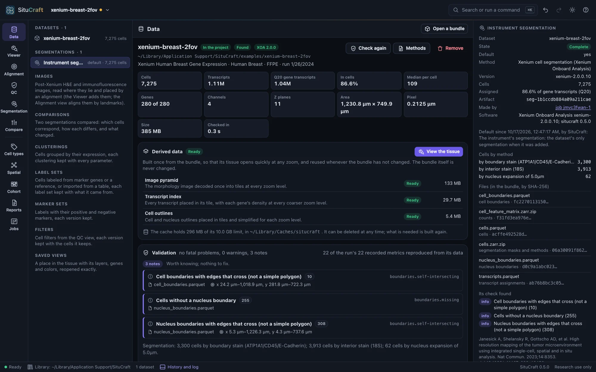
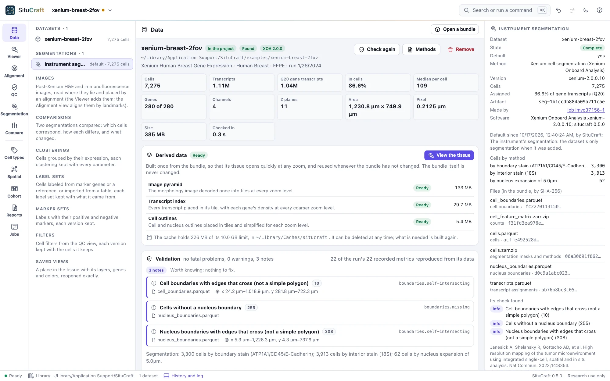
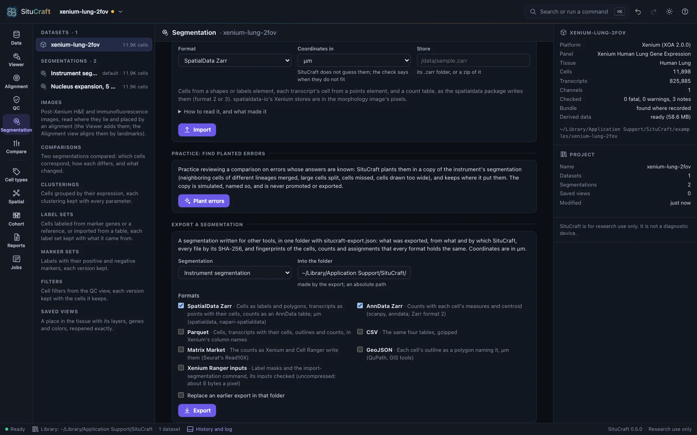
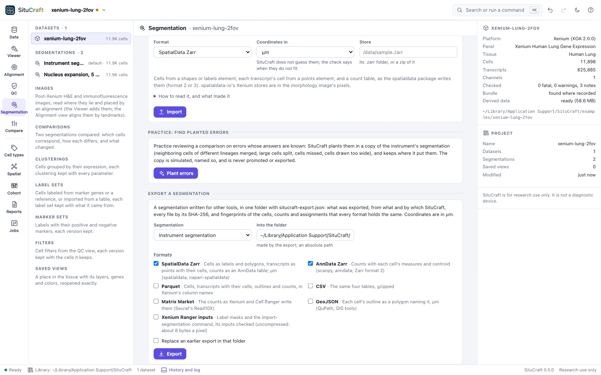
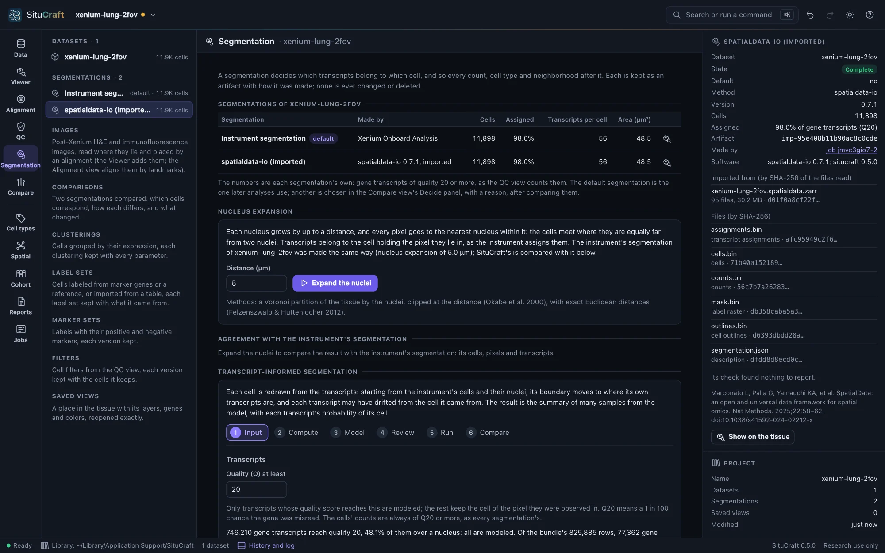
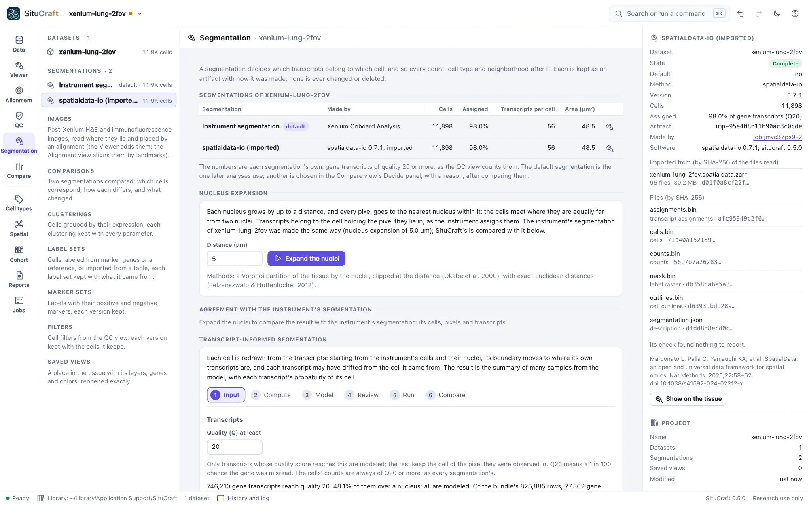
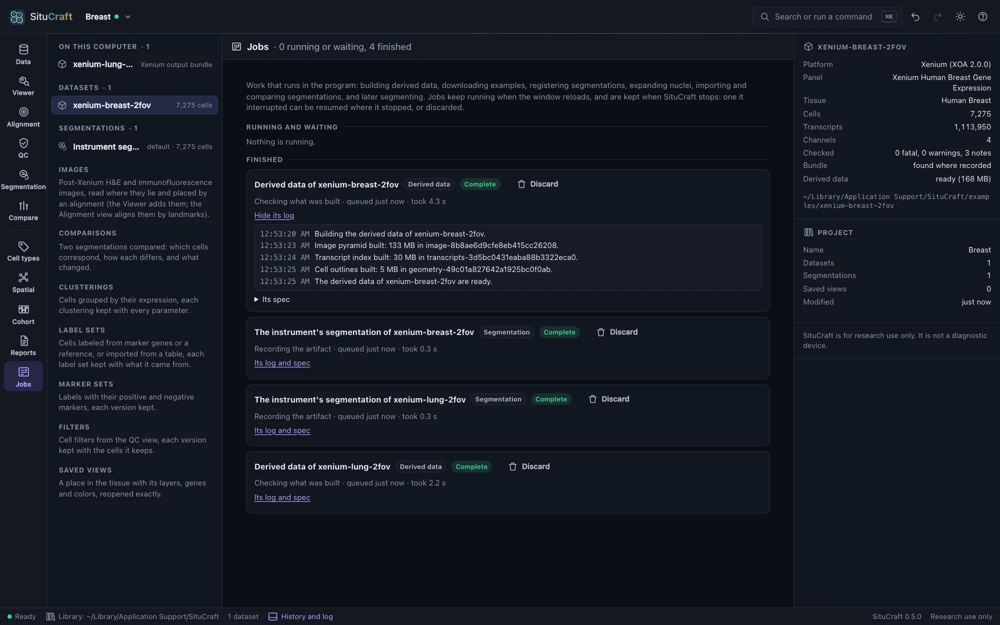
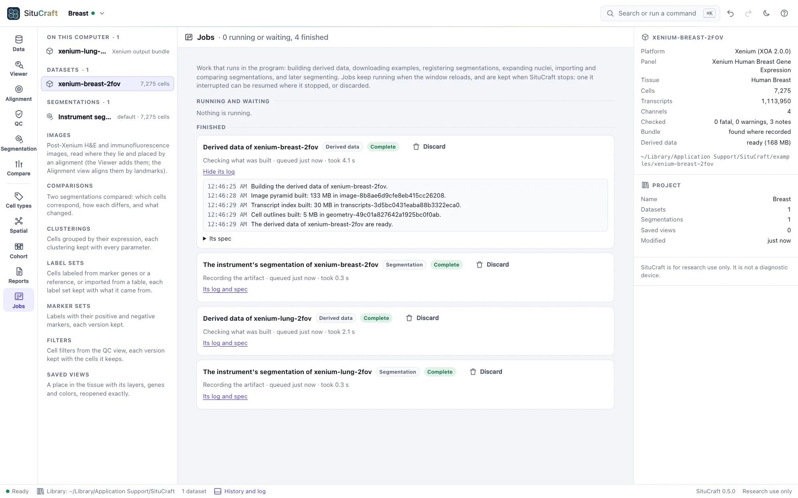

Segmentations
Every segmentation of a dataset is an artifact with its lineage: the instrument's, nuclei expanded by SituCraft, SituCraft's own refinement, and other tools' imported. None is ever deleted, and long work runs as jobs you can follow, stop and resume.
The instrument's segmentation
When a dataset is added, SituCraft registers the instrument's segmentation as an artifact: the cells, their boundaries, the nuclei, the transcripts' assignments and the counts, each file recorded by its SHA-256 (it stays in the bundle). Under Segmentations in the project tree, the default one is marked; the inspector shows how it was made (the methods and how many cells each found), its files, what its check found, and why it is the default.


Expanding the nuclei


The Segmentation view lists the dataset's segmentations side by side, with their cells, the share of gene transcripts each assigns, transcripts per cell and cell area. Expand the nuclei grows each nucleus by the distance you choose (5 µm, Xenium's default, to start) into a cell of its own: every pixel goes to the nearest nucleus within the distance, and transcripts to the cell holding the pixel they lie in. It runs as a job (about a second for the Lung example) and becomes a segmentation of its own, kept with its parameters. Below, it is compared with the instrument's segmentation pixel by pixel and transcript by transcript, and what differs is described: on the Lung example, segmented by the instrument the same way, 98.06% of pixels and 98.94% of transcripts are in the same cells.
Importing a segmentation


Import a segmentation brings in one made by another tool: a SpatialData Zarr store, Baysor's segmentation.csv with its polygons, GeoJSON polygons with an optional transcript table (CSV or Parquet), or a Xenium Ranger output bundle of the same run. Say whether its coordinates are in µm or in pixels of the morphology image (stores written by spatialdata-io from Xenium data are in pixels): SituCraft does not guess, and the import's check says when the cells do not lie within the dataset's image. It also checks that the transcripts it names are the dataset's. The import runs as a job and becomes a segmentation of its own, kept with the SHA-256 of every file it read, its transcripts counted as every segmentation's are; one whose check finds a fatal problem is kept as invalid, for review.
Practice: find planted errors
Practice: find planted errors, on the example datasets, makes a copy of the instrument's segmentation with known errors in it: neighboring cells of different lineages merged, large cells split in two, cells missed, and cells drawn too wide. Compare it with the instrument's, review the differences in the workspace, then open The answer key to see what was planted where (Show takes you to each). The copy is simulated, named so, and is never promoted or exported. On the Lung example, the comparison lists exactly the 60 planted errors, each in its class, and ranked by contamination the merges come first: their cells express markers of two lineages together. To practice on a dataset of your own, turn on Practice tools for every dataset in the menu of the theme button (top right); it is off unless you do.
Jobs


Long work runs as a job: building derived data, downloading an example, registering a segmentation, expanding nuclei, importing, comparing or exporting segmentations, planting errors, clustering cells, mapping them, adding the instrument's clusters. The Jobs view shows what runs and waits, what finished, and each job's log and spec. Jobs keep running when the window reloads, and closing the window while one runs asks first. If SituCraft stops (or the computer does) in the middle of a job, the job is shown as interrupted when SituCraft starts again: Resume continues it where it stopped, Discard forgets it.